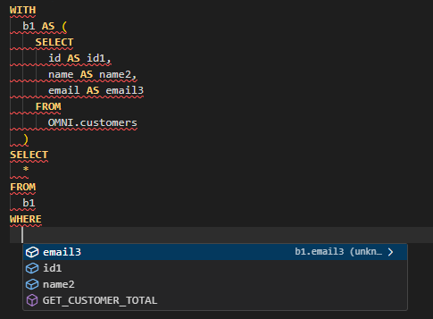

Write SQL with
the context you need.
Suggestions follow your database metadata and columns projected by CTEs. Contextual completion works without an LLM.
- Use dialect quick fixes and /catalog templates.
- Inspect execution plans where supported.
